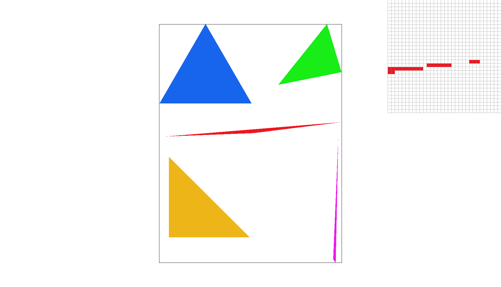
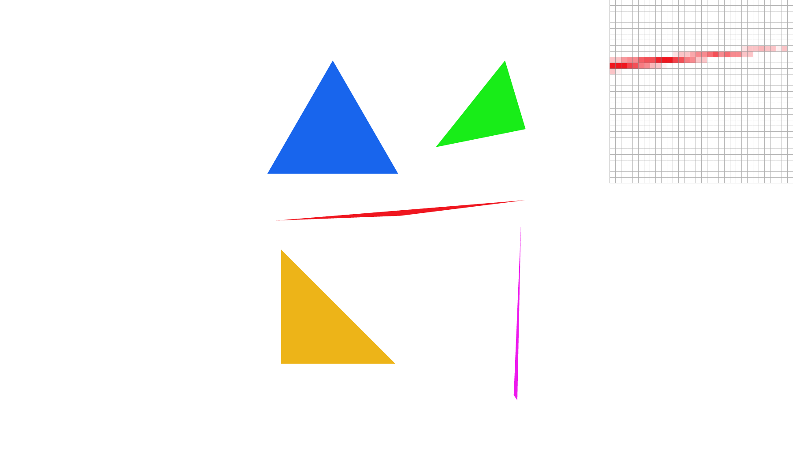
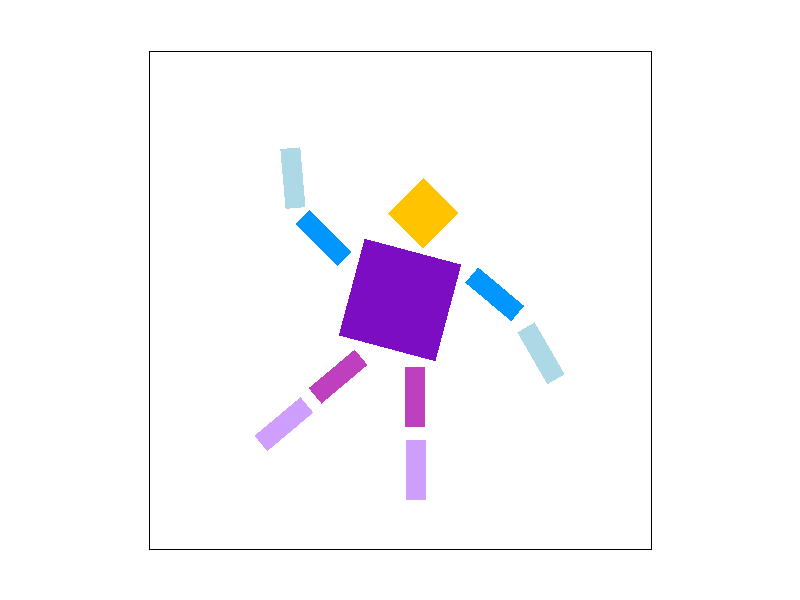
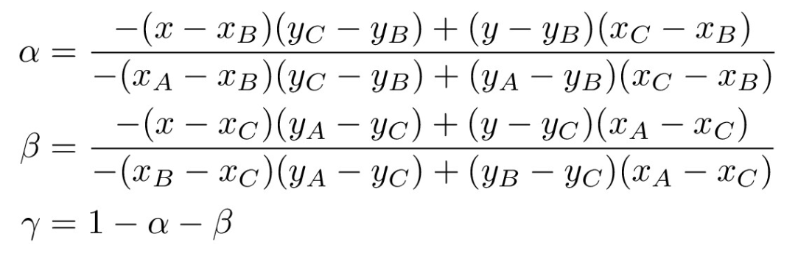
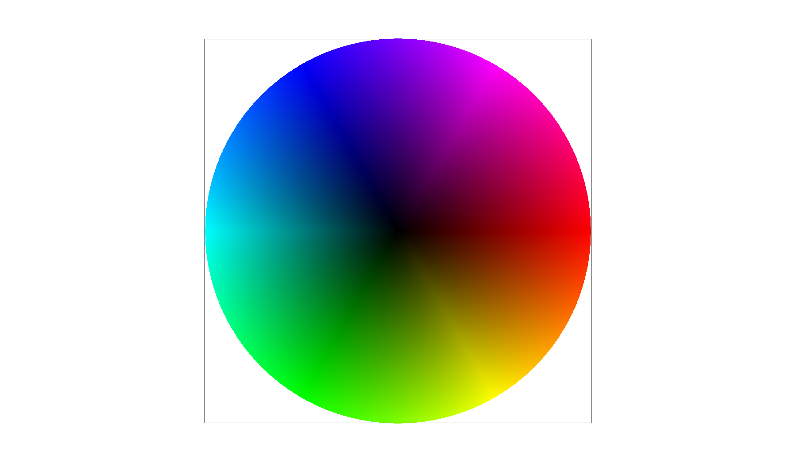
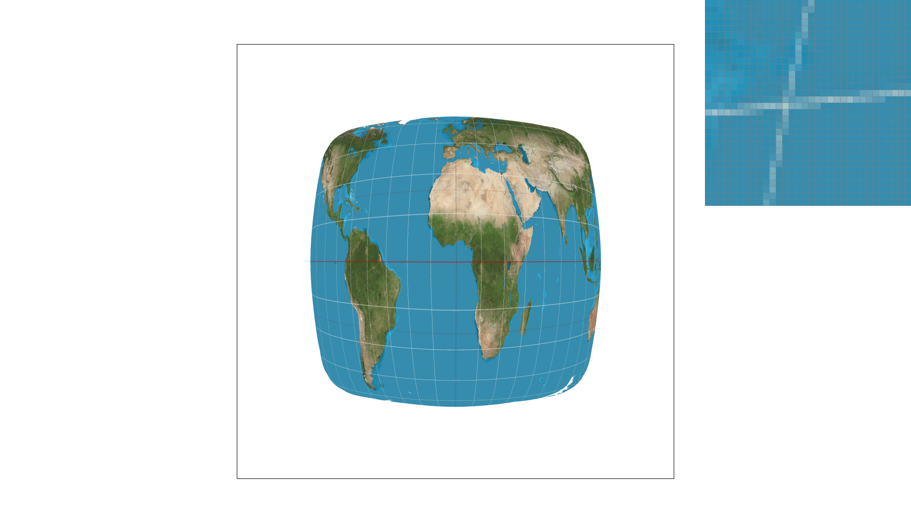
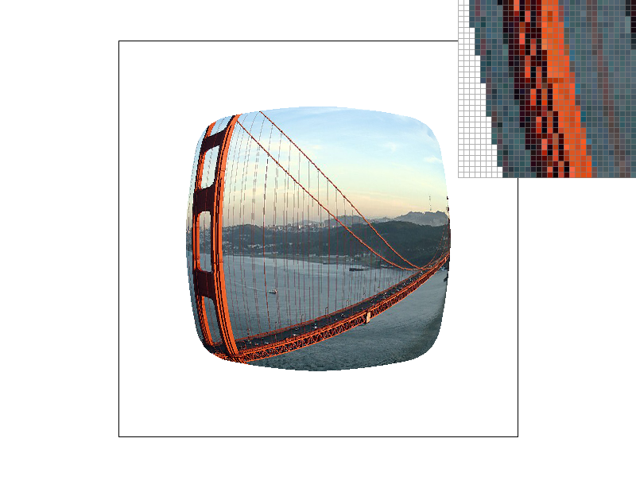
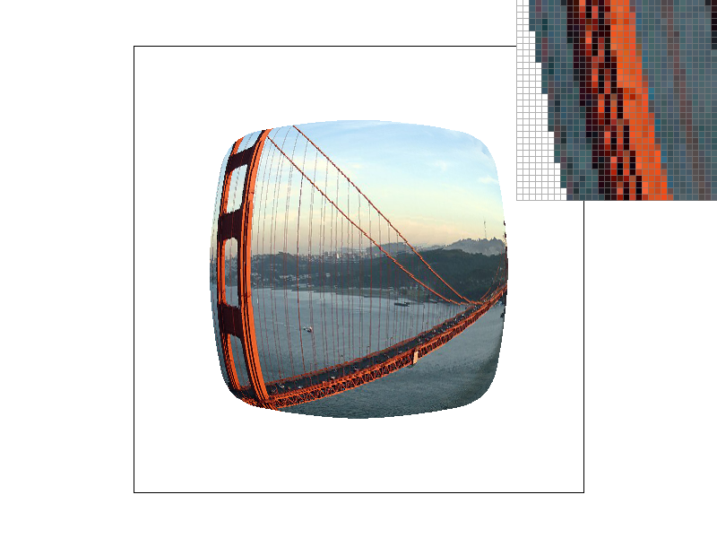

Overview
In this homework, we implemented a basic rasterizer that is capable of drawing/rendering triangles and using several antialiasing techniques like supersampling, nearest neighbor pixel sampling, bilinear interpolation pixel sampling, and three cases of level sampling (zero level, nearest level, and linear level (the level of a weighted sum by taking the adjacent levels of a continuous mipmap level). This vector graphic renderer has six distinct modes by combining the two image resampling options (nearest and bilinear) and the three mipmap level resampling options (zero, nearest, and linear interpolation). There are many notable insights we gained from this homework; however, one of the biggest things we’ve learned is the benefits of mipmaps. Mipmaps are leveraged to store and precompute textures of varying resolutions which makes it possible to not have to recompute the full image whenever we’re applying textures. This technique proved to be useful in so many different industries like animation and game development which both require a lot of computational work. Another very interesting concept we’ve got to learn and dive into is supersampling. We found it fascinating how certain pixels are able to take on intermediate values in supersampling to create a less jagged and more smooth effect. Overall, this project was really fun and gave us a look into the visual and technical aspects of creating a functional rasterizer that can take in SVG files.
Section I: Rasterization
Part 1: Rasterizing single-color triangles
A triangle can be defined by three points. Using these three points, we generate the corresponding three edges of the triangle as vectors and use them to perform operations on each sample that we want to test.
More precisely, we make use of dot products. For each edge of the triangle (represented as a vector originating from one of the points—let's call this anchor point A), we find its normal vector. This is done by using the formula (-(y1-y0), x1-x0), where (x0,y0) and (x1,y1) are endpoints of the edge. Then, using the center coordinates of the pixel we want to sample (x + 0.5, y + 0.5), we take the vector representation of that sample (using the same point A as the origin) and perform a dot product with the normal vector. Do this with the two other edges (choosing an edge endpoint as the anchor origin for both the sample and edge vector). If all three dot products are greater than or equal to 0, then it means that the sample is to be included in our triangle. Otherwise, it is outside of the triangle. This is also known as the three-line test.
Our algorithm implements it for input points that go in a counterclockwise direction (tracing from (x0,y0) to (x2,y2) is assumed to create the edges in counterclockwise direction). This would not work for input points that wind in a clockwise direction, so we also account for that by using the right hand rule: if the vector cross product between the first two lines along the triangle is positive, then we are tracing in the triangle in a counterclockwise direction. Otherwise, it is clockwise and swap (x0,y0) with (x2,y2) to change it to a counterclockwise winding order.
Our algorithm limits the number of samples to test by taking the max and min values of the x and y coordinates provided as input points in the triangle. This essentially encloses our samples to just the bounding box of the triangle; there would be no point within the triangle that is smaller than the smallest x or y-coordinate defining the triangle, and also no point that is greater than the greatest x or y-coordinate defining the triangle. In other words, our algorithm generates the smallest rectangle of samples that fully encloses the triangle, which is the definition of the bounding box. Implementing single-color triangle rasterization this way saves performance by only sampling the area that has a nonzero probability of being a part of the triangle.
|

|
Part 2: Antialiasing triangles
Sometimes when rasterizing edges or borders, the final shape turns out too jagged or disconnected (as shown above), especially if the resolution is low. To mitigate this aliasing effect, we implement supersampling. For a given sample pixel, we take x more samples within it and then average their values when resolving back into the frame buffer (of original resolution).
When observing the triangle image with sample rates of 1, 4, 9, and 16, the increase in sample rate will result in the jagged edges of the triangles becoming smoother. This smooth effect is created because there are more samples inside the pixel making it more accurate when calculating the averaged shade of the pixel.
Our supersampling algorithm modifies our basic triangle rasterization algorithm by increasing the size of the sample buffer by a factor of the sample rate. This is done so that we can store values of each supersampled point. For instance, if the sampling rate is 4, then we store 4 additional values for each pixel.
The supersampled points are spread uniformly within a pixel. To calculate these additional points, we calculate the ‘step size’ of the sample rate, which corresponds to the distance between each supersampled point. This distance is 1/sqrt(sample_rate) in both the x and y directions. We utilize this step size in our double for loop to calculate the coordinates of each sample point within a pixel: we start at x+step_size and y+step_size, and for each iteration of the for loops, we calculate sx = x - (step_size / 2) and sy = y - (step_size / 2). After that, we utilize the same three-line test to classify the points as either inside or outside the triangle. Since these supersampled coordinates tend to be decimal values, we take into account the nature of integer conversion in C++ and ensure that the rounded value results in the proper index for our sample buffer. For our algorithm, we store the values row-wise (all the values from row 1 left to right, then all the values from row 2, etc.).
When we perform the supersampling, we essentially create a much higher resolution image than what our frame buffer can support. To resolve the sample buffer to the frame buffer, we need to take the supersampled points and only store their average values for each pixel. In order to resolve this properly, we extract the relevant samples for each pixel using proper indexing in the buffer, average their RGB values, and place them into the corresponding index in the frame buffer. For instance, if 2 of the 4 supersampled points are red, and the other 2 are white, then what actually gets stored into the frame buffer would be a light red color.
Below are screenshots of test4.svg at sample rates 1, 4, 9, and 16:
|
|
|
|
|

|
Notice how as we increase the sample rate, the edges and corners of the triangles appear sharper and more continuous. This is due to the supersampling, which captures more information by performing the three-line test on many points inside each pixel.
Part 3: Transforms
We implemented translate, rotate, and scale transformations using 3x3 matrices that incorporate homogeneous coordinates. We used these transformations to move our cubeman. Below we tried to make our cubeman wave at the camera in a sort of dynamic, spirited way, with one foot off the ground. To achieve this, we rotated the head by 30 degrees and rotated/translated each limb respectively to create the dynamic waving pose.
|  |
Section II: Sampling
Part 4: Barycentric coordinates
Barycentric coordinates are a coordinate system based on triangle coordinates. More precisely, each (x,y) point corresponds to a (alpha, beta, gamma) point that reflects the closeness of the point to each of the 3 triangle corners. They are akin to weights for the closeness of the point to each corner. The precise relationship is shown below (where A,B,C correspond to triangle corner coordinates):
For instance, if alpha corresponds to triangle point A, then a value of 0 for alpha corresponds to the point being located exactly on point A. Also, alpha + beta + gamma = 1. If one of the Barycentric coordinates is less than 0, then it means that the point is outside of the triangle. We utilize the Barycentric coordinate formulas to calculate alpha and beta, and then use the property of alpha + beta + gamma = 1 to calculate gamma:
|  |
Below is an example of a triangle where each point is assigned to a color (purple, reddish pink, aqua blue). The color value of each point in the triangle is calculated using Barycentric coordinates. Note how points increasingly closer to a particular corner become closer in color to that corner’s color, resulting in a gradient.
We also apply Barycentric coordinates in coloring the circle below. Note that this is done by combining many thin triangle slices.
|
|

|
Part 5: "Pixel sampling" for texture mapping
Pixel sampling in other words is a way of obtaining a colored pixel when image sampling. When it comes to texture mapping, using pixel sampling will retrieve a corresponding texture pixel color. At low resolution, one pixel can represent many texel samples (for each pixel) whereas when it is at high resolution, many pixels represent a single texel sample (for each texel). Pixel sampling is very effective when it is used to magnify textures.
There are two pixel sampling methods implemented which are nearest neighbor interpolation and bilinear interpolation. Nearest neighbor interpolation is when you use the point given and find the closest pixel and its corresponding color. For bilinear interpolation, we take the four closest pixels and its colors then calculate a “middle” color by blending the four surrounding colors using linear interpolation.
In nearest sampling, we found the color of the nearest pixel by first retrieving the mipmap corresponding to the specified level. Then we calculated the highest and lowest values for both the u and v coordinates to make sure that both values stay in bounds in the dimension of the texture. Next, our algorithm computes the distances between the input coordinates and the nearest texels. We calculate the distance by using our get_distance function which uses the pythagorean theorem. One by one, we compare to see if the previous nearest texel is shorter or bigger than the current texel distance calculated, updating our nearest texel to the nearest texel when needed. After comparing all the texels, we return the color of the nearest texel we calculated using the .get_texel function.
In bilinear sampling for texture mapping, we first accessed the mipmap that corresponds to the specified level. Then we calculated the highest and lowest values for both the coordinates u and v and used it to find the four closest texels and the colors corresponding to it using the .get_texel() method. We then use linear interpolation (lerp) on all four of the colors we received for each sample texture coordinate. Two lerps are used to handle the horizontal border and the third lerp is used to conduct linear interpolation of the two sample locations given by the horizontal border (calculating the vertical border). After that, we receive the final color obtained from the three bilinear interpolations. In our code, we call sample() in our rasterize_textured_triangle() function and write the resulting pixel color from the sampling methods to sample_buffer.
When we compare the two methods of pixel sampling, nearest and bilinear, the difference is the approach to determining the color. When it comes to nearest sampling, it calculates the color by taking into account the closest pixel using the given texture pixel. This differs from bilinear campling where it takes into account the texture value of the four surrounding texture sample locations and applies linear interpolation to blend the four colors. When comparing how these two methods affect the image visually, at low resolution images, the bilinear sampling creates a more blurred effect on the lines because it uses more surrounding texture sample colors into considerations. At low resolution, the nearest sampling creates sharper lines in texture by creating more jagged edges.
|
|
|
|

|
|
When we look at the images, the image that uses bilinear sampling has smooth looking lines even at 1 sample per pixel while nearest sampling at 1 sample per pixel has very pixelated and disconnected lines. However, when working with higher resolution images (16 samples per pixel) we can see that the images for both bilinear sampling and nearest sampling are similar in the detail of the lines through human eyes.
There is a large difference between bilinear sampling and nearest sampling when we are using low resolution images because the two methods use different amounts of texture pixels when determining the colors of the image. Because low resolution images have less pixels to work with, the effects of bilinear sampling and nearest sampling are magnified. For bilinear sampling the image has a blurred effect which makes the lines more smooth because it takes more colors into consideration. Nearest sampling which takes less colors into consideration produces more jagged edges in the image. This difference in smoothness and sharpness are exemplified when there are less pixels in the images which is why the one sample per pixel image is sharper than the higher resolution 16 samples per pixel image.
Part 6: "Level sampling" with mipmaps for texture mapping
In level sampling, there are different levels to sample an image. When the level is 0, the image is at the highest resolution. As we go up levels, every subsequent level decreases the resolution of the image. The concept is also applied to texture mapping because each successive level we go up in reduces the resolution of the texture file that we’re sampling, storing these lower resolution images as mipmaps. Using these mipmaps of the original texture (all at different resolutions) we then apply it to the nearest image resolution that requires a texture. An example of this is say there is an image that is 36 by 36 pixels. We then need to find the closest mipmap in terms of its resolution and apply it to the image (ex: 32 by 32 pixel texture mipmap). This method involving mipmaps does require more storage, however, the benefit of this is that it offers computational savings such as quicker rendering speeds. This is because mipmaps allows quicker querying compared to resampling full resolution images.
When incorporating level sampling into our texture mapping, we did this in three different ways. The three tiers of level sampling are zero, nearest, and linear (a weighted blend of neighboring levels in a continuous mipmap level). To begin our calculations to obtain the current mipmap level, we implement a “get_level” function which calculates the level of a sample with max(sqrt((du/dx)^2 + (dv/dx)^2), sqrt((du/dy)^2 + (dv/dy)^2)) and taking the log base 2 of the resulting max value, getting the resulting mipmap level (also note that we scaled our u and v coordinates before passing it through the get_level function). To calculate du/dx, we did (sp.p_dx_uv.x - sp.p_uv.x). To calculate dv/dx, we did (sp.p_dx_uv.y - sp.p_uv.y). To calculate du_dy, we did (sp.p_dy_uv.x - sp.p_uv.x). To calculate dv/dy, we did (sp.p_dy_uv.y - sp.p_uv.y). We also check if D is less than 0 or greater than mipmap.size()-1, returning 0 and mipmap.size()-1 respectively if that’s the case.
For the level sample method, L_ZERO, we pass in 0 for our level argument for both the sample_nearest and sample_bilinear method case. These two methods for retrieving the texture colors are the same as the bilinear and nearest methods mentioned and explained in task 5. For L_NEAREST level sampling, get the nearest level using get_level(sp) and rounding the resulting value to get our nearest “integer” level. Then using the resulting level, we pass it into our sample_bilinear and sample_nearest function. For the L_LINEAR level sampling, first we obtained the current level by using the same get_level function then we floor() that value to get the lower value of the continuous level. Using the lower value, we add one to it to get the upper value of the continuous level. Afterwards, using the upper, lower, and original level, we can calculate the upper and lower weights then use (upper_weight * upper) + (lower weight * lower level) to calculate the weighted value.
|

|

|
|
|
|
|
|
|
When comparing the three sampling methods of level sampling, supersampling, and pixel sampling, we see that pixel sampling and level sampling run way quicker than super sampling. This is because supersampling has a higher number of samples which results in stronger antialiasing. However, supersampling also requires more storage because it needs to resize the buffer so that there is space for samples of images with high resolution.